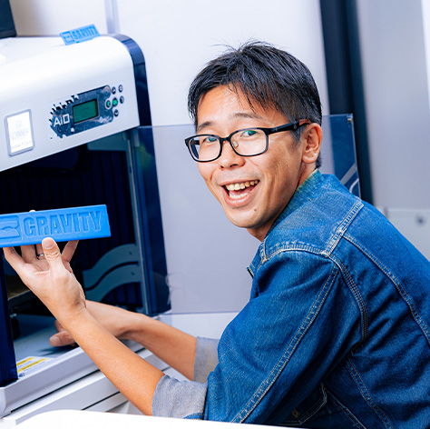

Engineers' Voice
社員インタビュー
現行の社員インタビューから一部を掲載しています。
後輩の成長が自分を変えました
技術基盤推進グループ / 2017年入社 / サブリーダー 五十嵐さん
Interview
新卒で、自分の興味を引く技術キーワードを重視し、グラビティにたどり着きました。Java研修を2ヶ月間受けた後、約半年の助走期間を経て開発業務に携わりました。
Now
最近は、指導した後輩の成長を見て、マネジメントへの新たなキャリアの視点が広がりました。
インパクトあるアプリを開発できるエンジニアになりたい
2023年入社 / 尾原さん
Interview
社員インタビュー記事より掲載しています。
Now
タイトル・写真・導線は現行の社員インタビューに合わせています。

経験あるCAD知識を活かし新しい業務領域に挑戦
技術基盤推進グループ / 2023年入社 / 溝渕さん
Interview
前職ではCADを活用した設計業務に携わっていました。グラビティに入社してからはCADの経験を活かし、新しい業務領域であるPLMに挑戦しています。
Now
これまでの経験や知識を活かしながら、製品開発の全プロセスを見渡すことができる環境でPLMに挑戦できることに、やりがいを感じています。